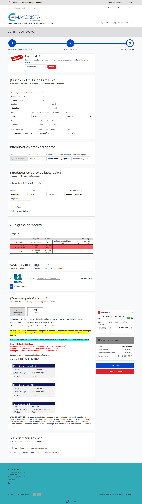
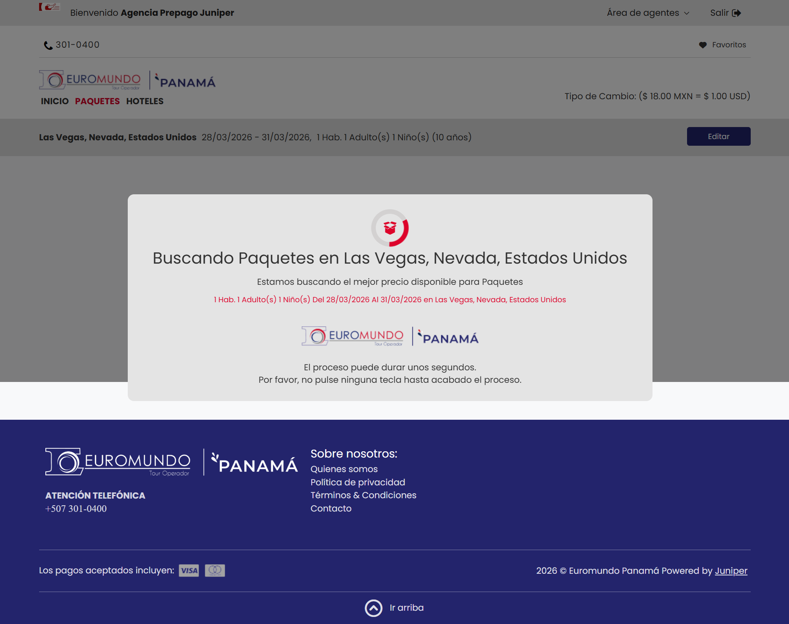
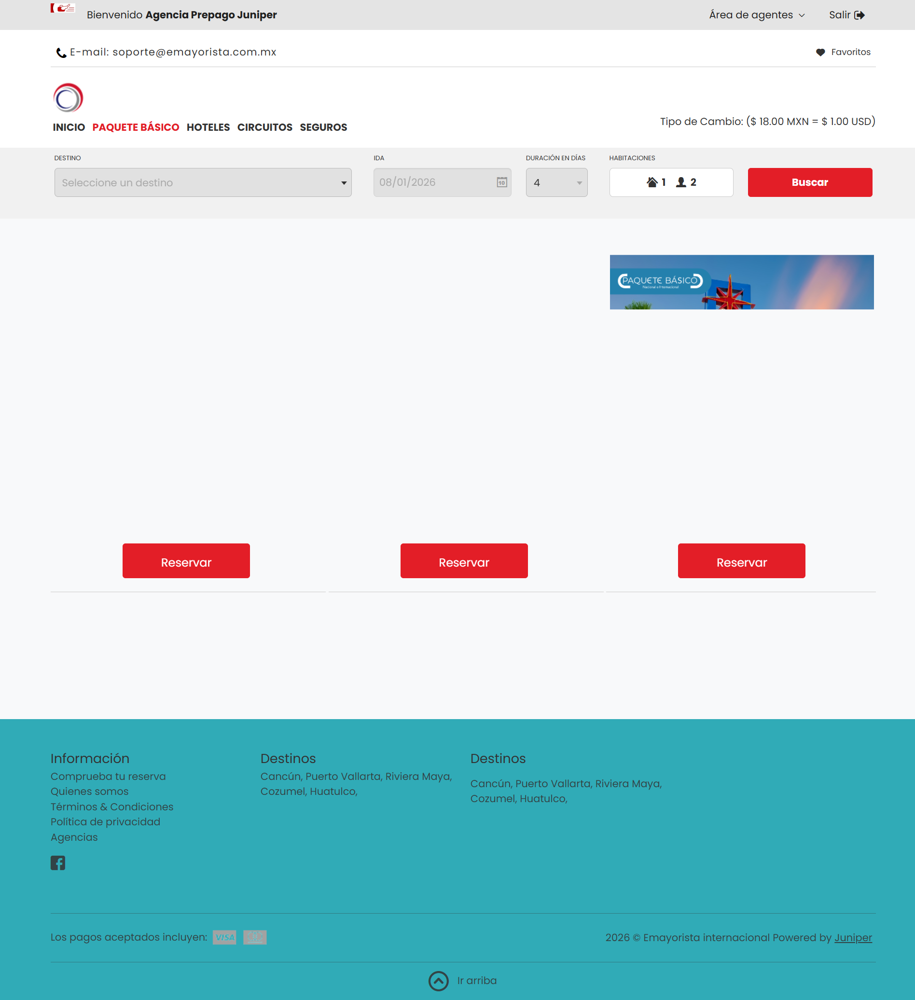

📘 PMO Report - All Executed Scenarios
🕓 Execution Date: 2026-01-07 09:32:27
📦 Release: 6.26.106.1
⏱️ Execution Duration: 00:10:51
4
Executed Scenarios
Test Results
Success Rate
0.0%
Mostrando todos los resultados
🕓 Execution Date: 2026-01-07 09:32:27
📦 Release: 6.26.106.1
⏱️ Execution Duration: 00:10:51
Mostrando todos los resultados
🧩 Scenario: paquete_nal_para_1adl_1cnn_canal_mxn
🔗 Booking: No booking
📊 Status: ❌ ERROR
⚠️ Failure reason: Test Cases/Euromundo/Paquete_Basico/paquete_nal_para_1adl_1cnn_canal_mxn FAILED. Reason: java.lang.NoClassDefFoundError: TestObject at java.desktop/com.sun.beans.introspect.MethodInfo.get(MethodInfo.java:89) at java.desktop/com.sun.beans.introspe... View more
ct.ClassInfo.getMethods(ClassInfo.java:80) at com.kms.katalon.core.main.CustomKeywordDelegatingMetaClass.getCustomKeywordClassAndSetMetaClass(CustomKeywordDelegatingMetaClass.java:107) at com.kms.katalon.core.main.CustomKeywordDelegatingMetaClass.invokeStaticMethod(CustomKeywordDelegatingMetaClass.java:50) at paquete_nal_para_1adl_1cnn_canal_mxn.run(paquete_nal_para_1adl_1cnn_canal_mxn:359) at com.kms.katalon.core.main.ScriptEngine.run(ScriptEngine.java:194) at com.kms.katalon.core.main.ScriptEngine.runScriptAsRawText(ScriptEngine.java:119) at com.kms.katalon.core.main.TestCaseExecutor.runScript(TestCaseExecutor.java:486) at com.kms.katalon.core.main.TestCaseExecutor.doExecute(TestCaseExecutor.java:477) at com.kms.katalon.core.main.TestCaseExecutor.processExecutionPhase(TestCaseExecutor.java:456) at com.kms.katalon.core.main.TestCaseExecutor.accessMainPhase(TestCaseExecutor.java:448) at com.kms.katalon.core.main.TestCaseExecutor.execute(TestCaseExecutor.java:322) at com.kms.katalon.core.common.CommonExecutor.accessTestCaseMainPhase(CommonExecutor.java:71) at com.kms.katalon.core.main.TestSuiteExecutor.accessTestSuiteMainPhase(TestSuiteExecutor.java:145) at com.kms.katalon.core.main.TestSuiteExecutor.execute(TestSuiteExecutor.java:104) at com.kms.katalon.core.main.TestCaseMain.startTestSuite(TestCaseMain.java:205) at TempTestSuite1767795631731.run(TempTestSuite1767795631731.groovy:35) at java.base/jdk.internal.reflect.NativeMethodAccessorImpl.invoke0(Native Method) at java.base/jdk.internal.reflect.NativeMethodAccessorImpl.invoke(NativeMethodAccessorImpl.java:77) at java.base/jdk.internal.reflect.DelegatingMethodAccessorImpl.invoke(DelegatingMethodAccessorImpl.java:43) Caused by: java.lang.ClassNotFoundException: TestObject ... 20 more
🖼️ Evidence:
🧩 Scenario: paquete_inter_auv_1adl_1cnn
🔗 Booking: No booking
📊 Status: ⚠️ FAILED
⚠️ Failure reason: Test Cases/Euromundo/Paquete_Basico/paquete_inter_auv_1adl_1cnn FAILED. Reason: com.kms.katalon.core.exception.StepFailedException: Unable to get text of object 'tituloDinamico' at com.kms.katalon.core.webui.keyword.internal.WebUIKeywordMain.stepFa... View more
iled(WebUIKeywordMain.groovy:175) at com.kms.katalon.core.webui.keyword.internal.WebUIKeywordMain.runKeyword(WebUIKeywordMain.groovy:49) at com.kms.katalon.core.webui.keyword.internal.WebUIKeywordMain.runKeywordUntilTimeout(WebUIKeywordMain.groovy:132) at com.kms.katalon.core.webui.keyword.builtin.GetTextKeyword.getText(GetTextKeyword.groovy:90) at com.kms.katalon.core.webui.keyword.builtin.GetTextKeyword.execute(GetTextKeyword.groovy:67) at com.kms.katalon.core.keyword.internal.KeywordExecutor.executeKeywordForPlatform(KeywordExecutor.groovy:79) at com.kms.katalon.core.webui.keyword.WebUiBuiltInKeywords.getText(WebUiBuiltInKeywords.groovy:1019) at paquete_inter_auv_1adl_1cnn.run(paquete_inter_auv_1adl_1cnn:133) at com.kms.katalon.core.main.ScriptEngine.run(ScriptEngine.java:194) at com.kms.katalon.core.main.ScriptEngine.runScriptAsRawText(ScriptEngine.java:119) at com.kms.katalon.core.main.TestCaseExecutor.runScript(TestCaseExecutor.java:486) at com.kms.katalon.core.main.TestCaseExecutor.doExecute(TestCaseExecutor.java:477) at com.kms.katalon.core.main.TestCaseExecutor.processExecutionPhase(TestCaseExecutor.java:456) at com.kms.katalon.core.main.TestCaseExecutor.accessMainPhase(TestCaseExecutor.java:448) at com.kms.katalon.core.main.TestCaseExecutor.execute(TestCaseExecutor.java:322) at com.kms.katalon.core.common.CommonExecutor.accessTestCaseMainPhase(CommonExecutor.java:71) at com.kms.katalon.core.main.TestSuiteExecutor.accessTestSuiteMainPhase(TestSuiteExecutor.java:145) at com.kms.katalon.core.main.TestSuiteExecutor.execute(TestSuiteExecutor.java:104) at com.kms.katalon.core.main.TestCaseMain.startTestSuite(TestCaseMain.java:205) at TempTestSuite1767795631731.run(TempTestSuite1767795631731.groovy:35) at java.base/jdk.internal.reflect.NativeMethodAccessorImpl.invoke0(Native Method) at java.base/jdk.internal.reflect.NativeMethodAccessorImpl.invoke(NativeMethodAccessorImpl.java:77) at java.base/jdk.internal.reflect.DelegatingMethodAccessorImpl.invoke(DelegatingMethodAccessorImpl.java:43) Caused by: com.kms.katalon.core.webui.exception.WebElementNotFoundException: Web element with id: 'tituloDinamico' located by 'By.xpath: //div[@class='info-card__title']' not found at com.kms.katalon.core.webui.model.WebUiElementFinder.findElementByNormalMethods(WebUiElementFinder.java:193) at com.kms.katalon.core.webui.model.WebUiElementFinder.findElementsBySelectedMethod(WebUiElementFinder.java:86) at com.kms.katalon.core.webui.model.WebUiElementFinder.findElementsBySelectedMethod(WebUiElementFinder.java:74) at com.kms.katalon.core.webui.model.WebUiElementFinder.findElementsBySelectedMethod(WebUiElementFinder.java:69) at com.kms.katalon.core.webui.model.WebUiElementFinder.findElement(WebUiElementFinder.java:43) at com.kms.katalon.core.webui.model.WebUiElementFinderWithTimeout.basicFindElement(WebUiElementFinderWithTimeout.java:50) at com.kms.katalon.core.webui.model.WebUiElementFinderWithTimeout.lambda$0(WebUiElementFinderWithTimeout.java:29) at com.kms.katalon.core.webui.model.SeleniumActionRetryController.performAction(SeleniumActionRetryController.java:96) at com.kms.katalon.core.webui.model.SeleniumActionRetryController.performAction(SeleniumActionRetryController.java:83) at com.kms.katalon.core.webui.model.WebUiElementFinderWithTimeout.findElement(WebUiElementFinderWithTimeout.java:28) at com.kms.katalon.core.webui.keyword.internal.WebUIAbstractKeyword.findWebElement(WebUIAbstractKeyword.groovy:96) at com.kms.katalon.core.webui.keyword.builtin.GetTextKeyword$_getText_closure1.doCall(GetTextKeyword.groovy:80) at java.base/jdk.internal.reflect.NativeMethodAccessorImpl.invoke0(Native Method) at java.base/jdk.internal.reflect.NativeMethodAccessorImpl.invoke(NativeMethodAccessorImpl.java:77) at java.base/jdk.internal.reflect.DelegatingMethodAccessorImpl.invoke(DelegatingMethodAccessorImpl.java:43) at jdk.proxy2/jdk.proxy2.$Proxy51.execute(Unknown Source) at com.kms.katalon.core.webui.model.SeleniumActionRetryController.performAction(SeleniumActionRetryController.java:96) at com.kms.katalon.core.webui.model.SeleniumActionRetryController.performAction(SeleniumActionRetryController.java:83) at com.kms.katalon.core.webui.keyword.internal.WebUIKeywordMain$_runKeywordUntilTimeout_closure1.doCall(WebUIKeywordMain.groovy:135) at com.kms.katalon.core.webui.keyword.internal.WebUIKeywordMain$_runKeywordUntilTimeout_closure1.call(WebUIKeywordMain.groovy) at com.kms.katalon.core.webui.keyword.internal.WebUIKeywordMain.runKeyword(WebUIKeywordMain.groovy:41) ... 21 more
🖼️ Evidence:
🧩 Scenario: paquete_inter_walm_1adl_1cnn
🔗 Booking: No booking
📊 Status: ⚠️ FAILED
⚠️ Failure reason: Test Cases/Euromundo/Paquete_Basico/paquete_inter_walm_1adl_1cnn FAILED. Reason: com.kms.katalon.core.exception.StepFailedException: Unable to select option by value '29476' of object 'Object Repository/Euromundo/book_steps/input_destination_inter' ... View more
using regular expression at com.kms.katalon.core.webui.keyword.internal.WebUIKeywordMain.stepFailed(WebUIKeywordMain.groovy:175) at com.kms.katalon.core.webui.keyword.internal.WebUIKeywordMain.runKeyword(WebUIKeywordMain.groovy:49) at com.kms.katalon.core.webui.keyword.internal.WebUIKeywordMain.runKeywordUntilTimeout(WebUIKeywordMain.groovy:132) at com.kms.katalon.core.webui.keyword.builtin.SelectOptionByValueKeyword.selectOptionByValue(SelectOptionByValueKeyword.groovy:77) at com.kms.katalon.core.webui.keyword.builtin.SelectOptionByValueKeyword.execute(SelectOptionByValueKeyword.groovy:44) at com.kms.katalon.core.keyword.internal.KeywordExecutor.executeKeywordForPlatform(KeywordExecutor.groovy:79) at com.kms.katalon.core.webui.keyword.WebUiBuiltInKeywords.selectOptionByValue(WebUiBuiltInKeywords.groovy:1269) at paquete_inter_walm_1adl_1cnn.run(paquete_inter_walm_1adl_1cnn:52) at com.kms.katalon.core.main.ScriptEngine.run(ScriptEngine.java:194) at com.kms.katalon.core.main.ScriptEngine.runScriptAsRawText(ScriptEngine.java:119) at com.kms.katalon.core.main.TestCaseExecutor.runScript(TestCaseExecutor.java:486) at com.kms.katalon.core.main.TestCaseExecutor.doExecute(TestCaseExecutor.java:477) at com.kms.katalon.core.main.TestCaseExecutor.processExecutionPhase(TestCaseExecutor.java:456) at com.kms.katalon.core.main.TestCaseExecutor.accessMainPhase(TestCaseExecutor.java:448) at com.kms.katalon.core.main.TestCaseExecutor.execute(TestCaseExecutor.java:322) at com.kms.katalon.core.common.CommonExecutor.accessTestCaseMainPhase(CommonExecutor.java:71) at com.kms.katalon.core.main.TestSuiteExecutor.accessTestSuiteMainPhase(TestSuiteExecutor.java:145) at com.kms.katalon.core.main.TestSuiteExecutor.execute(TestSuiteExecutor.java:104) at com.kms.katalon.core.main.TestCaseMain.startTestSuite(TestCaseMain.java:205) at TempTestSuite1767795631731.run(TempTestSuite1767795631731.groovy:35) at java.base/jdk.internal.reflect.NativeMethodAccessorImpl.invoke0(Native Method) at java.base/jdk.internal.reflect.NativeMethodAccessorImpl.invoke(NativeMethodAccessorImpl.java:77) at java.base/jdk.internal.reflect.DelegatingMethodAccessorImpl.invoke(DelegatingMethodAccessorImpl.java:43) Caused by: com.kms.katalon.core.exception.StepFailedException: No option matched. at com.kms.katalon.core.keyword.internal.KeywordMain.stepFailed(KeywordMain.groovy:51) at com.kms.katalon.core.keyword.internal.KeywordMain.stepFailed(KeywordMain.groovy) at com.kms.katalon.core.keyword.internal.KeywordMain.stepFailed(KeywordMain.groovy:23) at com.kms.katalon.core.webui.keyword.builtin.SelectOptionByValueKeyword$_selectOptionByValue_closure1.doCall(SelectOptionByValueKeyword.groovy:70) at java.base/jdk.internal.reflect.NativeMethodAccessorImpl.invoke0(Native Method) at java.base/jdk.internal.reflect.NativeMethodAccessorImpl.invoke(NativeMethodAccessorImpl.java:77) at java.base/jdk.internal.reflect.DelegatingMethodAccessorImpl.invoke(DelegatingMethodAccessorImpl.java:43) at jdk.proxy2/jdk.proxy2.$Proxy51.execute(Unknown Source) at com.kms.katalon.core.webui.model.SeleniumActionRetryController.performAction(SeleniumActionRetryController.java:96) at com.kms.katalon.core.webui.model.SeleniumActionRetryController.performAction(SeleniumActionRetryController.java:83) at com.kms.katalon.core.webui.keyword.internal.WebUIKeywordMain$_runKeywordUntilTimeout_closure1.doCall(WebUIKeywordMain.groovy:135) at com.kms.katalon.core.webui.keyword.internal.WebUIKeywordMain$_runKeywordUntilTimeout_closure1.call(WebUIKeywordMain.groovy) at com.kms.katalon.core.webui.keyword.internal.WebUIKeywordMain.runKeyword(WebUIKeywordMain.groovy:41) ... 21 more
🖼️ Evidence:
🧩 Scenario: paquetes_inter_auv_1adl_1cnn
🔗 Booking: No booking
📊 Status: ⚠️ FAILED
⚠️ Failure reason: Test Cases/Euromundo/Paquete_Basico/paquetes_inter_auv_1adl_1cnn FAILED. Reason: com.kms.katalon.core.exception.StepFailedException: Unable to get text of object 'tituloDinamico' at com.kms.katalon.core.webui.keyword.internal.WebUIKeywordMain.stepF... View more
ailed(WebUIKeywordMain.groovy:175) at com.kms.katalon.core.webui.keyword.internal.WebUIKeywordMain.runKeyword(WebUIKeywordMain.groovy:49) at com.kms.katalon.core.webui.keyword.internal.WebUIKeywordMain.runKeywordUntilTimeout(WebUIKeywordMain.groovy:132) at com.kms.katalon.core.webui.keyword.builtin.GetTextKeyword.getText(GetTextKeyword.groovy:90) at com.kms.katalon.core.webui.keyword.builtin.GetTextKeyword.execute(GetTextKeyword.groovy:67) at com.kms.katalon.core.keyword.internal.KeywordExecutor.executeKeywordForPlatform(KeywordExecutor.groovy:79) at com.kms.katalon.core.webui.keyword.WebUiBuiltInKeywords.getText(WebUiBuiltInKeywords.groovy:1019) at paquetes_inter_auv_1adl_1cnn.run(paquetes_inter_auv_1adl_1cnn:133) at com.kms.katalon.core.main.ScriptEngine.run(ScriptEngine.java:194) at com.kms.katalon.core.main.ScriptEngine.runScriptAsRawText(ScriptEngine.java:119) at com.kms.katalon.core.main.TestCaseExecutor.runScript(TestCaseExecutor.java:486) at com.kms.katalon.core.main.TestCaseExecutor.doExecute(TestCaseExecutor.java:477) at com.kms.katalon.core.main.TestCaseExecutor.processExecutionPhase(TestCaseExecutor.java:456) at com.kms.katalon.core.main.TestCaseExecutor.accessMainPhase(TestCaseExecutor.java:448) at com.kms.katalon.core.main.TestCaseExecutor.execute(TestCaseExecutor.java:322) at com.kms.katalon.core.common.CommonExecutor.accessTestCaseMainPhase(CommonExecutor.java:71) at com.kms.katalon.core.main.TestSuiteExecutor.accessTestSuiteMainPhase(TestSuiteExecutor.java:145) at com.kms.katalon.core.main.TestSuiteExecutor.execute(TestSuiteExecutor.java:104) at com.kms.katalon.core.main.TestCaseMain.startTestSuite(TestCaseMain.java:205) at TempTestSuite1767795631731.run(TempTestSuite1767795631731.groovy:35) at java.base/jdk.internal.reflect.NativeMethodAccessorImpl.invoke0(Native Method) at java.base/jdk.internal.reflect.NativeMethodAccessorImpl.invoke(NativeMethodAccessorImpl.java:77) at java.base/jdk.internal.reflect.DelegatingMethodAccessorImpl.invoke(DelegatingMethodAccessorImpl.java:43) Caused by: com.kms.katalon.core.webui.exception.WebElementNotFoundException: Web element with id: 'tituloDinamico' located by 'By.xpath: //div[@class='info-card__title']' not found at com.kms.katalon.core.webui.model.WebUiElementFinder.findElementByNormalMethods(WebUiElementFinder.java:193) at com.kms.katalon.core.webui.model.WebUiElementFinder.findElementsBySelectedMethod(WebUiElementFinder.java:86) at com.kms.katalon.core.webui.model.WebUiElementFinder.findElementsBySelectedMethod(WebUiElementFinder.java:74) at com.kms.katalon.core.webui.model.WebUiElementFinder.findElementsBySelectedMethod(WebUiElementFinder.java:69) at com.kms.katalon.core.webui.model.WebUiElementFinder.findElement(WebUiElementFinder.java:43) at com.kms.katalon.core.webui.model.WebUiElementFinderWithTimeout.basicFindElement(WebUiElementFinderWithTimeout.java:50) at com.kms.katalon.core.webui.model.WebUiElementFinderWithTimeout.lambda$0(WebUiElementFinderWithTimeout.java:29) at com.kms.katalon.core.webui.model.SeleniumActionRetryController.performAction(SeleniumActionRetryController.java:96) at com.kms.katalon.core.webui.model.SeleniumActionRetryController.performAction(SeleniumActionRetryController.java:83) at com.kms.katalon.core.webui.model.WebUiElementFinderWithTimeout.findElement(WebUiElementFinderWithTimeout.java:28) at com.kms.katalon.core.webui.keyword.internal.WebUIAbstractKeyword.findWebElement(WebUIAbstractKeyword.groovy:96) at com.kms.katalon.core.webui.keyword.builtin.GetTextKeyword$_getText_closure1.doCall(GetTextKeyword.groovy:80) at java.base/jdk.internal.reflect.NativeMethodAccessorImpl.invoke0(Native Method) at java.base/jdk.internal.reflect.NativeMethodAccessorImpl.invoke(NativeMethodAccessorImpl.java:77) at java.base/jdk.internal.reflect.DelegatingMethodAccessorImpl.invoke(DelegatingMethodAccessorImpl.java:43) at jdk.proxy2/jdk.proxy2.$Proxy51.execute(Unknown Source) at com.kms.katalon.core.webui.model.SeleniumActionRetryController.performAction(SeleniumActionRetryController.java:96) at com.kms.katalon.core.webui.model.SeleniumActionRetryController.performAction(SeleniumActionRetryController.java:83) at com.kms.katalon.core.webui.keyword.internal.WebUIKeywordMain$_runKeywordUntilTimeout_closure1.doCall(WebUIKeywordMain.groovy:135) at com.kms.katalon.core.webui.keyword.internal.WebUIKeywordMain$_runKeywordUntilTimeout_closure1.call(WebUIKeywordMain.groovy) at com.kms.katalon.core.webui.keyword.internal.WebUIKeywordMain.runKeyword(WebUIKeywordMain.groovy:41) ... 21 more
🖼️ Evidence: